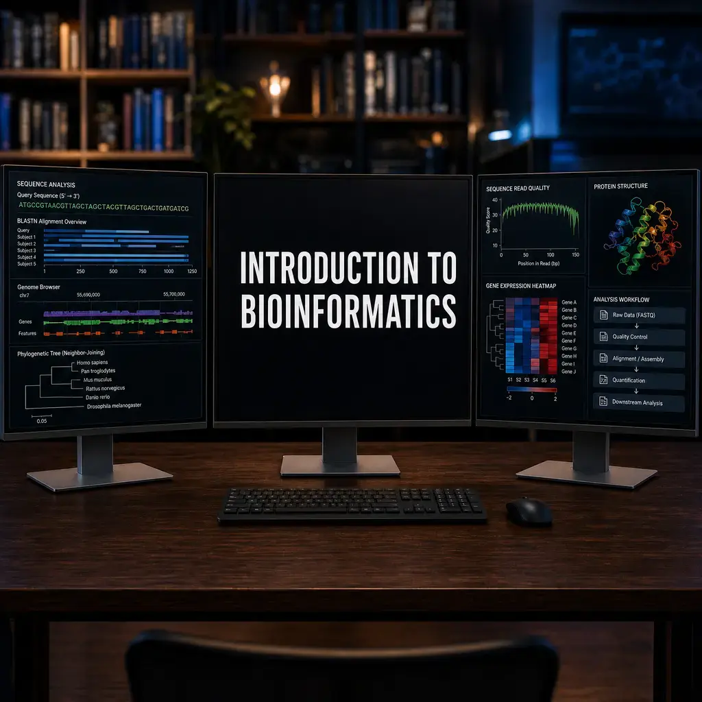

Introduction to Bioinformatics
Nasir Mahmood Abbasi, PhD
Bioinformatics Educator

Learning Objectives & Prerequisites
- Prerequisites: No programming background is required; complete Computer and Data Fundamentals alongside this overview.
- Objective: Describe the role of bioinformatics, the main data types it handles, and how reproducible workflows answer biological questions.
- Expected Output: A personal learning plan that links one biological question to suitable data, tools, and the next Academy Pathway stage.
Suggested route: use the Bioinformatics Learning Path to review any prerequisite stage before continuing.
📘 Why This Tutorial Matters
Bioinformatics is an inherently interdisciplinary field that requires combining biological domain knowledge with computational skills and statistical reasoning. Each tutorial in this series builds upon previous concepts while introducing new tools and analytical frameworks, creating a comprehensive learning path from fundamental skills to advanced research-grade analyses.
The techniques and best practices covered here reflect current community standards and are directly applicable to real research projects in genomics, transcriptomics, proteomics, and multi-omics integration.
What is Bioinformatics?
Bioinformatics is an interdisciplinary field that combines biology, computer science, mathematics, and statistics to analyze and interpret biological data. With the explosion of biological data from genomics, proteomics, and other high-throughput technologies, bioinformatics has become essential for modern biological research.
Think of bioinformatics as the bridge between raw biological data and meaningful scientific insights: it's where computational power meets biological curiosity to unlock the secrets hidden within massive datasets.
The Data Revolution in Biology
In today's data-driven world, biological research generates staggering amounts of information. Consider these mind-boggling statistics:
- The human genome contains approximately 3.2 billion base pairs
- A single RNA-seq experiment can generate millions of sequencing reads
- Protein databases contain information on hundreds of thousands of proteins
- The NCBI GenBank database doubles in size approximately every 18 months
Without computational tools, analyzing this data would be like trying to read every book in the Library of Congress in a single afternoon: technically impossible and practically meaningless.
Why Learn Bioinformatics?
Bioinformatics isn't just about handling big data; it's about transforming that data into biological understanding. Here's what makes it so powerful:
1. Process Large Datasets Efficiently
Modern sequencing technologies can generate terabytes of data in a single run. Bioinformatics tools allow researchers to process this information systematically and reproducibly.
2. Identify Patterns in Biological Data
From finding conserved protein domains to identifying disease-associated genetic variants, bioinformatics helps reveal patterns that would be invisible to the naked eye.
3. Make Predictions About Biological Functions
By comparing unknown sequences to databases of characterized genes and proteins, we can predict the function of newly discovered biological elements.
4. Accelerate Discovery in Medicine and Biology
Bioinformatics has accelerated drug discovery, enabled personalized medicine, and helped us understand complex diseases like cancer at the molecular level.
Core Areas of Bioinformatics
Sequence Analysis
The foundation of bioinformatics: comparing DNA, RNA, and protein sequences to understand evolutionary relationships and functional similarities.
# Example: Finding similar sequences using BLAST
blastp -query protein.fasta -db nr -out results.txt -evalue 1e-5
Structural Bioinformatics
Predicting and analyzing the three-dimensional structure of biological molecules to understand how structure relates to function.
Genomics and Transcriptomics
Analyzing entire genomes and gene expression patterns to understand how genes are regulated and how they contribute to phenotypes.
Systems Biology
Taking a holistic approach to understand how biological components interact in complex networks and pathways.
Single-cell and Spatial Omics
The newest frontier in bioinformatics. Instead of bulk tissue, we can now sequence individual cells (Single-cell RNA-seq) or map gene expression directly onto tissue slides (Spatial Transcriptomics). This allows us to discover rare cell types and understand the physical architecture of tumors and organs at a cellular resolution.
Essential Skills for Bioinformatics
To begin your bioinformatics journey, you'll need to develop skills in several key areas:
1. Command Line Proficiency
The command line is your primary interface for running bioinformatics tools. Essential skills include:
- File navigation and manipulation
- Text processing with tools like grep, awk, and sed
- Process management and job scheduling
2. Programming Languages
While you don't need to be a software engineer, programming skills are invaluable:
- Python: Excellent for data manipulation, machine learning, and writing scalable pipelines.
python import pandas as pd # Loading and filtering a biological dataset in Python df = pd.read_csv("gene_expression.csv") highly_expressed = df[df['expression_level'] > 100] - R: The gold standard for statistical analysis, visualization, and single-cell analysis.
r library(dplyr) # Loading and filtering the same dataset in R df <- read.csv("gene_expression.csv") highly_expressed <- df %>% filter(expression_level > 100) - Bash: Essential for automating workflows and running tools on remote HPC clusters.
3. Statistics and Data Analysis
Understanding statistical concepts is crucial for: - Interpreting p-values and confidence intervals - Understanding experimental design - Recognizing bias and confounding factors
4. Biological Knowledge
Domain expertise remains essential: you need to understand: - Central dogma of molecular biology - Basic genetics and genomics concepts - Experimental techniques and their limitations
Common Bioinformatics Workflows
Genome Assembly
Taking short sequencing reads and reconstructing the original genome sequence: like solving a massive jigsaw puzzle where some pieces might be missing or duplicated.
Variant Calling
Identifying differences between a sample genome and a reference genome to find mutations that might be associated with disease or other traits.
RNA-seq Analysis
Measuring gene expression levels across different conditions to understand how genes are regulated and how they respond to environmental changes.
Phylogenetic Analysis
Reconstructing evolutionary relationships between species or genes to understand how life has evolved over time.
The Bioinformatics Toolkit
Databases
- NCBI: The mothership of biological databases
- UniProt: Comprehensive protein sequence and annotation database
- Ensembl: Genome browser and annotation database
- PDB: Protein structure database
Software Tools
- BLAST: Sequence similarity searching
- Clustal: Multiple sequence alignment
- GATK: Genome analysis toolkit for variant discovery
- Bowtie/BWA: Short read alignment tools
Programming Libraries
- Biopython: Python tools for computational biology
- Bioconductor: R packages for bioinformatics
- BioJulia: Julia packages for computational biology
Getting Started: Your First Steps
Step 1: Master the Basics
Start with our detailed tutorials on: - Command line fundamentals - Package management with Conda
Step 2: Choose Your Focus Area
Bioinformatics is broad: consider specializing in: - Genomics: Whole genome sequencing and analysis - Transcriptomics: Gene expression analysis - Proteomics: Protein identification and quantification - Single-cell analysis: Understanding cellular heterogeneity
Step 3: Practice with Real Data
Theory is important, but hands-on experience is invaluable. Start with: - Public datasets from NCBI SRA - Tutorial datasets from software documentation - Simulated data for learning specific techniques
Step 4: Join the Community
Bioinformatics has a vibrant, supportive community: - Biostars: Q&A forum for bioinformatics - r/bioinformatics: Reddit community - Twitter: Follow #bioinformatics hashtag - Local meetups: Many cities have bioinformatics groups
Common Challenges and How to Overcome Them
The Learning Curve
Bioinformatics can feel overwhelming at first: you're learning biology, statistics, and programming simultaneously. Solution: Take it one step at a time and focus on practical applications.
Reproducibility
Ensuring your analyses can be reproduced by others (including future you) is crucial. Solution: Learn version control (Git), document your code, and use workflow management systems.
Data Management
Biological datasets are large and complex. Solution: Develop good file organization habits and learn about data compression and storage solutions.
Keeping Up with Technology
The field evolves rapidly with new tools and methods appearing regularly. Solution: Follow key journals, attend conferences, and participate in online communities.
The Future of Bioinformatics
Bioinformatics continues to evolve rapidly, driven by:
- Single-cell technologies: Understanding biology at unprecedented resolution
- Long-read sequencing: Resolving complex genomic regions
- Machine learning: Applying AI to biological problems
- Multi-omics integration: Combining different types of biological data
- Cloud computing: Making powerful analyses accessible to everyone
Conclusion
Bioinformatics represents one of the most exciting intersections of technology and biology. Whether you're interested in understanding human disease, exploring biodiversity, or developing new therapeutic approaches, bioinformatics provides the computational foundation for modern biological discovery.
The journey may seem daunting at first, but remember: every expert was once a beginner. Start with the fundamentals, practice regularly, and don't be afraid to ask questions. The bioinformatics community is known for being welcoming and supportive of newcomers.
Next Steps
Ready to dive deeper? Here's your roadmap:
- Master the command line: Check out our detailed command line tutorial
- Set up your environment: Learn about Conda and Mamba for package management
- Explore single-cell analysis: Discover the cutting-edge field of single-cell RNA-seq
Remember, bioinformatics is not just about the tools: it's about asking the right biological questions and using computational approaches to find meaningful answers. Welcome to this exciting field where biology meets big data!
Have questions about getting started in bioinformatics? Feel free to contact us: we're here to help you on your computational biology journey.
✅ Key Takeaways
- Understanding the rationale behind each step is as important as knowing the commands
- Parameter choices should be justified and documented for reproducibility
- Visualization is a critical component of quality assessment at every stage
- Combining computational skills with biological knowledge produces the best analyses
- Community-developed best practices continuously evolve as methods improve
Knowledge Check & Assessment
1. Concept Verification
What makes a computational analysis reproducible rather than simply repeatable on one computer?
2. Practical Execution
Choose one published biological question and outline the data, computational steps, and validation needed to answer it. Pass Criteria: Record the command or analysis choice, keep the output, and explain why it answers the stated task.
3. Troubleshooting
If a pipeline produces a result but its inputs, versions, and parameters are undocumented, what can and cannot be trusted?